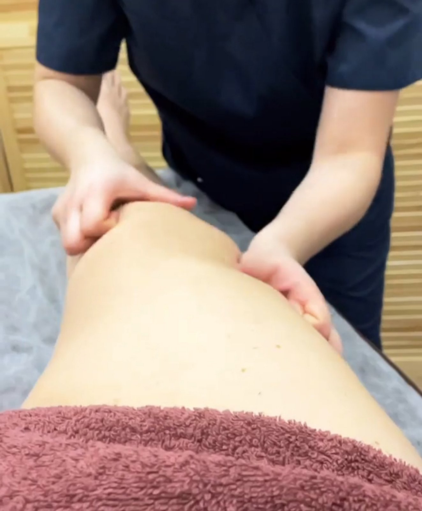

Магістральний лімфодренаж масаж має як плюси, так і мінуси
Плюси
-
Підвищення кровообігу та руху лімфи в організмі;
-
Зняття напруги та болю в м'язах;
-
Покращення стану шкіри та волосся;
-
Підвищення імунної системи та зміцнення організму;
-
Зниження набряків та нормалізація обміну речовин.
Мінуси
-
Іноді масаж може бути болісним, особливо якщо лімфатичні вузли дуже великі та напружені;
-
Можливі побічні ефекти, такі як головний біль, нудота та втома;
-
Не рекомендується проводити масаж при деяких станах здоров'я, таких як рак,
серцево-судинні
захворювання та інфекції.
Якщо ви вирішили скористатися послугами магістрального лімфодренаж масажу Зверніться до мене
вже
сьогодні, щоб отримати магістральний лімфодренаж масаж
Магістральний лімфодренаж масаж техніка
Магістральний лімфодренаж масаж - це спеціальна техніка масажу, яка спрямована на
стимулювання
лімфатичної системи організму. Основні техніки, які використовуються під час магістрального
лімфодренаж масажу, включають:
-
Глибоке повільне дихання. Це допомагає заспокоїти організм та зменшити напругу в
м'язах.
-
Легкі дотики. Масажист легко торкається шкіри, щоб стимулювати лімфатичну
систему. Ці дотики
можуть бути виконані рукою або м'якими щітками.
-
Підтягування: ця техніка включає в себе підтягування шкіри вгору. Це допомагає
покращити
тонус шкіри
-
Легкі вібрації. Проводжу за допомогою масажу легкої вібрації на шкірі, щоб
покращити
кровообіг та
рух лімфи.
-
Легке стискання. Цю техніку масажу проводжу обхопивши та стиснувши м'язи, щоб
допомогти
зняти напругу.
-
Дренаж. Масаж виконуєьться за допомогою дренажними рухами, щоб стимулювати рух
лімфи в
організмі та забезпечити
її виведення з тіла.
-
Легкі тисківці. Масаж може виконувати легкі тисківці на лімфатичні вузли, щоб
сприяти
виведенню надлишків рідини з організму.
Дотримуюсь певних технічних правил та протоколів для забезпечення безпеки своїх пацієнтів.
Для замовлення Магістрального лімфодренажу зателефонуй та запишись

Магістральний лімфодренаж масаж види та ефективність
Магістральний лімфодренаж масаж може бути виконаний на різних ділянках тіла. Основні види
магістрального лімфодренаж масажу включають:
-
Масаж обличчя і шиї. Цей вид масажу може бути корисним для зменшення набряків
обличчя і
підборіддя, зменшення зморшок, поліпшення кровообігу і тонусу м'язів обличчя.
-
Масаж рук і ніг. Цей вид масажу може бути корисним для зменшення набряків,
поліпшення
кровообігу, зняття напруги в м'язах, поліпшення рухливості і зниження болю в руках та
ногах.
-
Масаж спини. Цей вид масажу може бути корисним для зменшення болю в спині,
поліпшення
рухливості, зняття напруги в м'язах, зниження стресу і поліпшення загального
самопочуття.
-
Масаж живота. Цей вид масажу може бути корисним для поліпшення травлення,
зменшення
запалення, підвищення імунітету та зниження стресу.
-
Масаж грудей. Цей вид масажу може бути корисним для поліпшення дихання, зменшення
болю в
грудях і спині, підвищення імунітету та зниження стресу.
Ефективність магістрального лімфодренаж масажу залежить від багатьох факторів, таких як
відповідність техніки, тривалість процедури, ступінь втручання та індивідуальні особливості
пацієнта.
Дослідження показують, що магістральний лімфодренаж масаж може бути ефективним у зменшенні
набряків, поліпшенні кровообігу, зменшенні болю, зниженні стресу та підвищенні імунітету.
Кабінет масажу для вас завжди відкритий вам треба лише записатися на Магістральний
лімфодренаж
масаж
